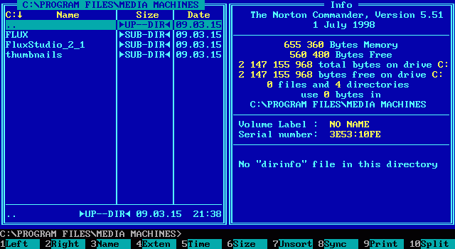

Norton Commander (NC) is a discontinued prototypical orthodox file manager (OFM), written by John Socha and released by Peter Norton Computing (later acquired in 1990 by the Symantec corporation). NC provides a text-based user interface for managing files on top of MS-DOS. It was officially produced between 1986 and 1998. The last MS-DOS version of Norton Commander, 5.51, was released on July 1, 1998.
Norton Commander was easy to use because it had a constant view of two file manipulation objects at once. After starting the program the user sees two panels with file lists. Each panel can be easily configured to show information about the other panel, a directory tree, or a number of other options. At the bottom of the screen, Norton Commander displays a list of commands that are extended on demand by the CTRL and ALT keys. Thus, without heavy use of the mouse (although mouse functionality was integrated around version 3.0), the user is able to perform many file manipulation actions quickly and efficiently. Additionally, it also includes a built-in text file viewer (invoked with F3 key) and text file editor (invoked with F4 key).

Norton Commander was very popular during the DOS era and it has been extensively cloned. For example, the IntelliJ IDE used to include a "Commander" plugin that performed file manipulation using the same shortcut keys as Norton Commander but the plugin is now obsolete.